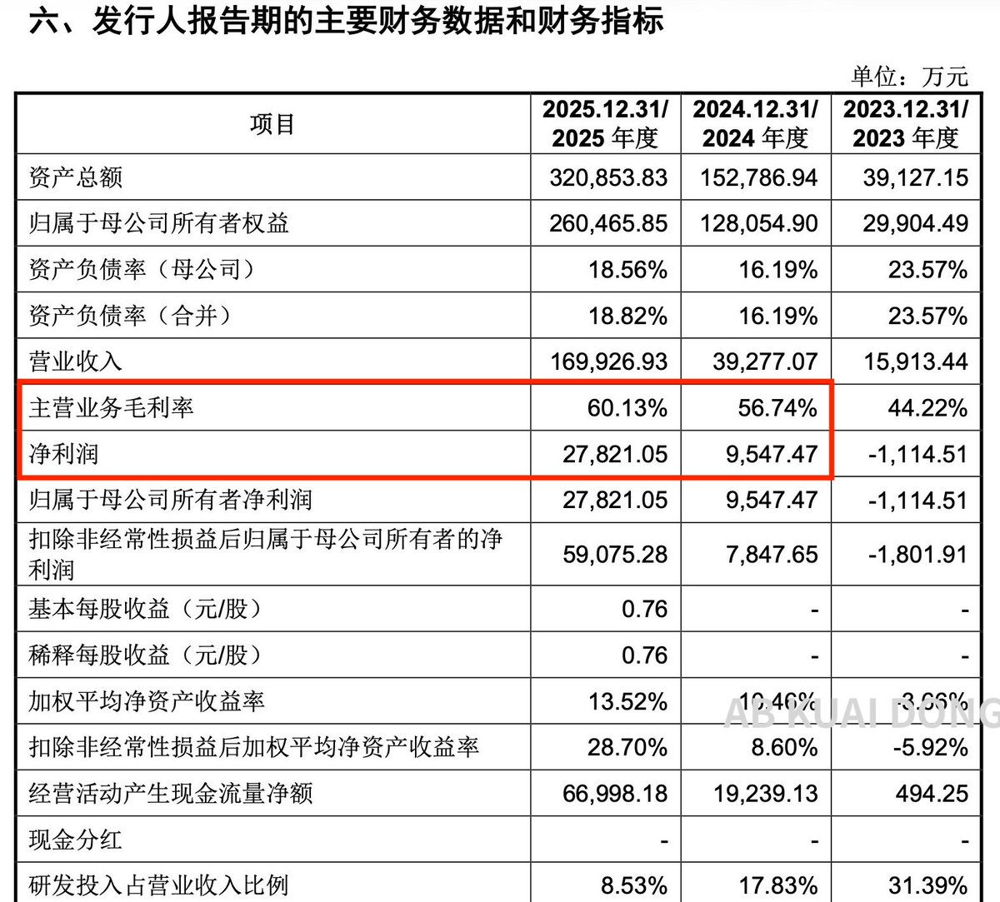
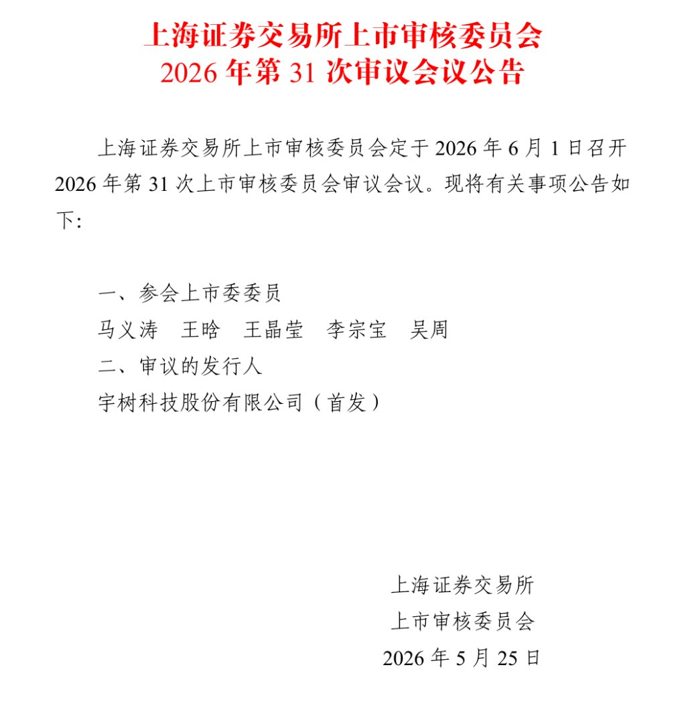

就这点业绩八成股价上市即巅峰，一泻千里估计是回不来到那种，
再加上这一两年都开始耍人形机器人有不小概率三到五年内直接快进披星戴月光速退市
当然你要是想寒武纪和摩尔纯玩理财学大师那当我没说

再加上这一两年都开始耍人形机器人有不小概率三到五年内直接快进披星戴月光速退市
当然你要是想寒武纪和摩尔纯玩理财学大师那当我没说


中国机器人公司宇树科技，正式被上交所在 6 月 1 日审核上会，数据显示公司 26 年 1 到 3 月，实现营收 4.23 亿元人民币，上半年净利润预计 2.36 亿到 2.83 亿元。
其中最可怕的是，这玩意毛利率有 60%。
我对后续的特斯拉机器人，开始乐观了。 https://t.co/sQdpxyjkxb https://t.co/eSsW0FIjQa
其中最可怕的是，这玩意毛利率有 60%。
我对后续的特斯拉机器人，开始乐观了。 https://t.co/sQdpxyjkxb https://t.co/eSsW0FIjQa